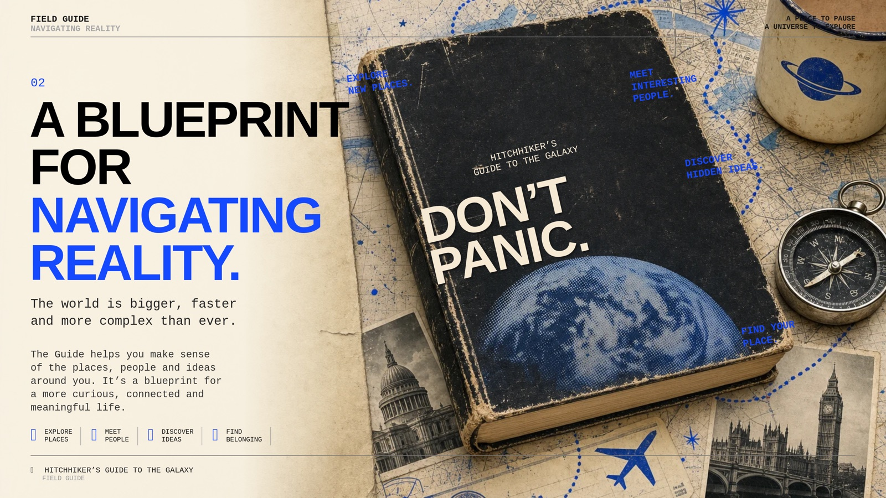

The Hitchhiker's Guide to Trust
The Hitchhikers
A galaxy of local-first verifiable
A guide to keys,
The Hitchhiker's
Trust
Who holds our keys?
The world is shared. Your story is yours.
Built on OpenVTC
Don't Panic →
First shown at IIW 43; it will also run as a workshop at a university in Amsterdam. Open with the Towel: Hitchhikers already call the personal agent the Towel. This guide: where the Towels meet, a trust graph the community keeps itself, and the guides that give it something to own. → / ← move, N notes, O overview, T pauses the timer, F full screen.
I · Why
1. A request for guidance The Hitchhikers wrote a declaration, for Douglas Adams. It ends by asking anyone who can see further.
Read on →
From "A Wildly Improbable Declaration and Invitation" (the Hitchhikers, fm.ide.earth/hitchhikers-declaration), for Douglas Adams. It quotes his puddle, the one that thinks the hole was made to fit it, then says: we are trying not to be the puddle; this is a Request for Guidance. It also names the ambition: "owning our own AI rather than renting our minds". This talk is one answer: guidance a community writes together, keeps on machines it owns, and anyone can check.
II · The movement
1. A community and their towels Each holds one part of how a community comes to trust itself. Touch each one.
Touch each one
The projects in the Hitchhiker presentations, one community (this scene also carries what the old Towels and embassies map showed: each person's towel, embassies that host, VTA Farm, and the open stack under every node). Bonfires turns chat into knowledge graphs; the local co-op co-owns the nodes; Chathackers bring agents into group chats. The Hitchhikers bring guides and guidance: the story and the reason to gather. OpenVTC (one of the first projects from the DTG working group; assume the room knows it) brings the trust graph: who belongs, what was promised, what was kept. agentprivacy's Mages City brings open autoresearch and agentic privacy: agents that do checkable research in the open, and act on your behalf without giving you away. Where all three overlap is a community that keeps its own trust.
I · Why
3. What you keep. What you share. Knowing is different from disclosing. You choose what crosses.
Shared with the community
Nothing shared yet.
CHOSEN
Touch something to share it
Share the stage proof and the evidence root; try the keys and the vouches (they won't move). The edges of the graph stay on the community's node; members disclose stages, not relationships.
IV · Trust by doing
4. Three different graphs Knowledge, promises and trust are connected, but not interchangeable. Touch each in turn.
Click each row in turn. Knowledge: what is known or done. Promise: what is offered and accepted. Trust: the relationship between the two, evidenced. The middle term is never skipped.
IV · Trust by doing
5. Connection and reflection Connection without reflection is noise.from The Amnesia Protocol · Selene's Spellbook
Two people, two perspectives.
Meet Commit Evidence
The line is from the poem The Amnesia Protocol (Selene's Spellbook): connection without reflection is noise; reflection without connection is stone. Meeting (or a check-in) is proximity: a dotted line, not trust. A commitment both accept is a promise. Trust is the promise kept, with evidence. Never infer trust from presence.
IV · Trust by doing
3. The towel, and the thumbs up “A small program that holds your keys, says no on your behalf, and keeps the receipts.” Its first trust task: a thumbs up.
As hitchhikers As agents
The Hitchhikers call their trust agent the Towel (hitchhikers.earth, "Why We Carry a Towel"): a small program that holds your keys, says no on your behalf, and keeps the receipts; the software underneath is OpenVTC. And a hitchhiker's trust is "a willingness to be guided" (hitchhikers.earth, "Hitchhiker"). Use the thumb as the analogy, then switch to agents: the same five steps. Then where it leads: a hitchhiker cooperates on guides and guidance (guiding someone, writing a field guide together, the timebank, the local exchange), and each of these is a trust task, recorded as trust built for the community's verifiable trust agents. Between agents, the same tasks open the data beneath evidence leaves over the Trust Spanning Protocol: for autoresearch challenges, guide quality and governance. Trust Tasks (the Trust over IP task force we contribute to) are small, standard requests between parties: vouch for me, show you belong, agree these terms. The Hitchhikers will run their own, local first, on their own node. The thumbs up is the first one, and it sets you on an adventure. Zero knowledge is what makes the last step possible: proving your place in someone's guide or community without revealing who you are or who vouched.
IV · Trust by doing
4. Every place unlocks the next chapter Field Guide turns real places into playable stories. Discover, download, play, return.
Walk the guide → An illustrative Guide · fieldguide.earth · Max's live Guide goes here
Max's half: Field Guide (fieldguide.earth) makes Guides, playable spatial adventures that turn real places into stories, characters and discovery; "every place unlocks the next chapter". The handover to trust: each place you reach is witnessed (you stood here), a trust task your towel keeps; walk a guide with others and it becomes guidance: who walked it, what they found, what to fix. The guide a community walks together is the first thing it owns. [Max's handover line goes here.]
III · The technology
8. Three kinds of node A trust graph lives in three places. Touch each.
Your device holds you: keys and your agent (the verifiable trust agent the Hitchhikers call the Towel). The community node holds the community: its OpenVTC services and its guides. The embassy is the stronger version: a node trusted to receive visitors from many communities, witness what happens and countersign it, so a visit can become a credential. Personal machines visit; embassies host.
III · The technology
9. A visit becomes trust A traveller visits an embassy. Step through what happens.
Next beat →
Six beats, each signed: resolve (find the embassy by its DID), admission (the gate reads your terms), exchange (messages through the mediator), understanding (show you understood the guide), consent (both agree what is recorded), seal (host, visitor and a witness sign). The sealed visit can be issued as a credential, and later shown as a predicate proof: "I visited and understood" without showing who else was there.
III · The technology
10. One Pi to a network People and their Pi: many kinds of small node, each held by someone, become a Hitchhiker mesh of services on OpenVTC.
Next → or touch a step
The statuses are honest: the gate is this site; the core-node kit exists and the first Hitchhikers node is being stood up; Star Key is released; the embassy is prototyped (the first embassy Pi and a signed visit, visitor half); witnessed seals are designed; a mesh of many kinds of Pi (community centre, embassy, hearthold, forest garden, mage for AI trust agents) is the direction.
II · The movement
11. Connected cities, local trust A smart city needs a trust graph too. Grow it from the districts up: only proofs cross to the city.
Walk a guide through the city →
Touch a district, or walk a guide
Walk a guide through the city: the Field Guide chapters land in four districts, each district witnesses its moment, and only the proofs reach the city ring. A way to think, not a product claim: the communities who will govern connected cities need a trust graph for sensors, data and services. The local, Pi-first pattern scales from a Hitchhiker community to a district; the city is a ring of districts exchanging proofs, not a hub holding everyone's edges.
IV · Trust by doing
12. What a community owns first Guides created with Field Guide, forked and countersigned by members, hosted by the community itself.
Fork
A new community has members, but nothing yet to do together. Guides give it work on day one. Field Guide is where guides are created and played; the community hosts its own copies and the trust that grows around them. Guidance stays decentralised: anyone can fork, the community decides what merges.
IV · Trust by doing
13. Trust is earned Traveller · Thumbs up: joins by DID, towel in hand. Each step is a trust task, recorded as trust built.
Touch to take the next step
Stages unlock by demonstrated understanding and contribution, not fees or identity checks. Each stage can become a credential the VTC issues; a predicate proof lets a member show the stage without showing who vouched.
III · The technology
15. Guidance you can check What agents find becomes guidance, worth following only if anyone can check it.
A research run, by an agent
Idea B was refuted: the cost rose 1.8%.
Negative results are sealed too: they save the next team the run
Published root
not sealed yet
Root now
Seal then change one word in the run
Why it matters, in one breath: research and security communities online are going to organise as verifiable trust communities, and the only thing that should earn standing there is work others can check. Mages City's autoresearch is our contribution to guides and guidance: agents that propose, check and seal their work, so what they hand a community is guidance it can rely on. One agent proposes, another checks, a human decides; every run is sealed and its SHA-256 root published. The sentence is illustrative; the hashing is real.
III · The technology
5. OpenVTC and VTI From the Decentralized Trust Graph working group. Any community can run it on its own hardware.
The parts A member's path
OpenVTC is a Linux Foundation Decentralized Trust lab: the reference implementation of the Trust over IP Decentralized Trust Graph working group's specifications for a verifiable trust community (sponsors: the DTGWG co-chairs). VTI (verifiable trust infrastructure) is the spec and its services, a Rust workspace under the OpenVTC org: the VTA, the VTC service, and the PNM/CNM tools. Two views, one at a time: the parts (all five run today) and a member's path (steps 1 to 4 live; vouching and trust tasks are in the spec). Live today: Mages City's community and the First VTC (first.openvtc.net). Relationship credentials (two VRCs, one edge) are in the spec; not yet seen issued by a live community. Links: trustoverip.github.io/dtgwg-vti-spec · github.com/openvtc · trusttasks.org.
III · The technology
6. How information flows Pick something to follow: where it lives, and what, if anything, leaves.
Linger here. Information moves outward only as something checkable and minimal: the device holds what is personal, the community's node holds what is communal, the world receives proofs. Keys and who vouched for whom never leave the room. Marked honestly: stage proofs are a ZKP Task Force design, not built yet.
III · The technology
16. The hitchhiker mage A trust agent can belong to many communities. It travels between them, bringing guidance and solving problems.
Travel →
Carries: its keys, its standing, its evidence
In OpenVTC an agent (a verifiable trust agent) joins each community by DID and is admitted on that community's terms. A Mages City mage is admitted by work evidence, so it can be trusted to arrive somewhere new and help. It moves between communities like a hitchhiker: it brings guidance backed by sealed work, and it leaves with nothing that wasn't its own. The communities stay separate; only proofs and guidance travel. Above them sits the higher network: the first VTC a person joins, and the First Person network that recognises the same person across every community.
II · The movement
17. How the pieces fit Touch one.
If asked what we have given back: fixes to the OpenVTC setup guide, the Star Key extension (join by DID, agreements), ZKP Task Force work (co-chair), an agreements family in Trust Tasks, and the Pi node kit. Everything goes upstream through issue → PR.
I · Why
2. Who owns the future? AI opens up extraordinary possibilities. But who gets to shape what comes next?
Ask everyone at the table. Record only if they all say yes. Put a phone down. Press the one button. Say it. Sealed on the phone, kept on the Pi. Its star joins tonight's chain. Open the recorder →
Read on → 1 / 7 · The question
From the Hitchhikers' "Public Intelligence" deck. Five beats, after the reviewed assembly (v2), then two that hand it to the room: the one question for the tables, and the one-button recorder, with a code to scan. Open with possibility, not AI-driven economic doom: the crisis to address is trust in institutions, information and public authority. Two futures: AI could widen agency or concentrate power; neither is inevitable. The clouds: we need ways to ground powerful systems in real places, communities, law, knowledge and accountable institutions; the cloud is not the enemy. Capability: AI changes what one person can explore, understand, create and connect, but capability is not authority. Public intelligence: Public Intelligence is not AI supplied to the public, nor crowd wisdom displacing expertise. It is lived experience, science, institutional memory, legitimate authority and AI working together. Touch each circle, then the centre.
I · Why
3. We don't start from zero Generations of knowledge, experience, institutions and hard-won lessons. Touch a book.
Radical Humility (the Hitchhikers' deck): learn from our inheritance without sanctifying it. Preserve expertise, dissent and the capacity to revise institutions. A community node stands on these layers; it does not replace them.
II · The movement
4. Three disciplines, one method Knowledge and judgment. Purpose and mandate. Action and stewardship.
Turn the cycle → or touch a discipline
The Hitchhikers' method: three repeating disciplines, not nine rigid stages. Evidence and discernment; deliberation and legitimate mandate; building, testing and tending. Each corrects the others. Each card says where that discipline already lives in this guide.
II · The movement
5. Four principles, one foundation Local first. Chat first. Agentic first. Built on trust. Touch each.
Local autonomy, chat and voice as the accessible interface, agents helping with research and building, all bounded by constituted mutual trust. You don't have to code to decide what gets built. (The Hitchhikers' deck.)
II · The movement
6. Grow at the speed of trust Independent communities. Shared knowledge. Accountable relationships.
A universal hub The speed of trust Earn a link →
Illustrative, not a census
Federation without a universal hub (the Hitchhikers' deck). Communities share tools and learning while keeping local autonomy and legitimate authority. Growth is paced by earned trust, not a growth hack. Each link here is something earned: a guide shared, a visitor vouched for, a proof accepted.
IV · Trust by doing
7. Chat is the interface. Consent is the authority. A conversation with your agent. It helps you think, draft and plan.
Next beat → A conversation is not permission to act
The boundary (the Hitchhikers' deck): an inspectable, bounded and revocable mandate bridges human deliberation to authorised agent action. Converse, mandate, act; scope, review, revocation. Cryptographic signatures establish provenance, not truth or legitimacy. This is the towel saying no on your behalf; a mandate is one of the Trust Tasks ("agree these terms").

From the Hitchhikers introduction (Doop frame IQsWwADEIL): a blueprint for navigating reality. The world is bigger, faster and more complex than ever. The Guide helps you make sense of the places, people and ideas around you: explore places, meet people, discover ideas, find belonging. Don't Panic.
IV · Trust by doing
8. Trust begins together The commitment: a conversation captured through technology, producing a record of specific, measurable pledges.
Three ways to take part
Pi Ceremony · the commitment Table Ceremony · the knowledge café Palava · the public gathering
Three ceremonies from the Hitchhikers' decks, small to large. The Pi Ceremony is the commitment (v2): a conversation captured through technology (transcribe, infer, record on the Pi), producing a record of specific, measurable pledges. The first deck adds the guard rails: hardware and identity proofs don't automatically create trust, and nothing is assumed recorded, so the record happens only when everyone says yes. A pledge is a promise; kept with evidence, it is trust (see Connection is not trust). The Table Ceremony draws on Knowledge Café practice: listening and inquiry come before mandates, dissent stays visible, a table is not automatically a vote (touch the five verbs). The Palava is a whole event, theatre and performance, not just a big table or a formal assembly: it can stage disagreement and invite participation without forcing consensus. Honest status: the Pi node kit is built; it has not yet run a ceremony.
II · The movement
5. From knowing to doing. How local knowledge and initiative develop into collective capacity and real-world action.
Build up → or touch a layer
From the Hitchhikers' reviewed assembly (v2). Build it from the ground: local intelligence (people, knowledge, relationships and initiatives in place), then cooperation (shared purpose, resources and legitimate mandates), then shared action (real-world impact at scale, made possible by connected local action). Along the base: knowledge, purpose, action, which is the three disciplines again. Under it all: broad participation. Each layer names where it lives in this guide; the top is a direction, not a product.
Open invitation
8. What could you contribute? A request for guidance: an invitation to bring knowledge, experience and capability to a more participatory future.
Purpose
Bring together the knowledge and capabilities needed to understand our world and shape what comes next.
Who we invite
Individuals, communities, researchers, practitioners, institutions and organisations.
Areas of contribution · illustrative, not exhaustive
Bring it to
a community +
an event +
a ceremony =
a verifiable trust event
Join Hitchhikers →
The reviewed assembly (v2) closes on the Request for Guidance as an open invitation, the same request the Hitchhikers' declaration makes (scene 1). Let people touch what they could bring; it stays on their device. Where they bring it: a verifiable trust event, a community + an event + a ceremony (a Pi Ceremony, a Table, a Palava), with the guide's chain as its evidence. Then: join the Hitchhikers, or put a thumbs up on tonight's page.
Part two
1. From the Hitchhikers to VTI That was the Hitchhikers: the story, the method, the ceremonies. Now the implementation: what each idea becomes in OpenVTC and VTI. Touch a row.
Connect them all →
The hinge of the talk. Everything before it is the Hitchhikers, in their own words; everything after it is the implementation, OpenVTC and VTI. Each row connects one Hitchhikers idea to the piece that implements it, with an honest status: live in OpenVTC, live on this guide, prototyped, in the spec, or a direction.
A case study
1. Baby Dragon: one dragon, many cities Wherever Baby Dragon appears, a local Hitchhikers community gathers around it and keeps its own private knowledge graph. Between cities, only proofs travel.
Illustrative cities · Baby Dragon by REAL PARENT / INJURY, with Mitchell Travers · curated by Culture Vault · with Lattice Labs and the Hitchhikers · proposed for transmediale 2027
Baby Dragon, a proposal for transmediale 2027 (Berlin, 28 to 31 January): an interactive sculpture and trust network by REAL PARENT / INJURY with Mitchell Travers, curated by Culture Vault, with Lattice Labs and the Hitchhikers. The point is the pattern, not the sculpture: Baby Dragon can appear in many cities, and each city has its own Hitchhikers and its own private knowledge graph on its own node. Between cities only proofs travel (toy dragons go with trusted visitors); the graphs stay home. Together: a transnational Chinatown of art, local AI and performance, many small internets with no hub. The cities are illustrative: London, Amsterdam and San Francisco where the Hitchhikers gather, Hong Kong and Sydney, the dragon's two homes, as the first stop (one or the other). A proposal, not yet confirmed.
Over to you
Over to you
Talk it through at your table, then record your answer.
Same page as /over-to-you/: the question lives in questions.js. One question, on purpose. Let the room pull in any deeper scene (All, bottom right). Touching the question opens the recorder, the next scene.
Over to you
Say it out loud
One button. Sealed on this device, kept on the Pi. Your voice moves the Star.
Same page as /record. Leaving this scene turns the microphone off and drops a note still being recorded. For a phone on a table use the standalone page: slide 7 of Who owns the future? has its code.
Tonight
7. Don't panic: tonight, a new page Each night is a verifiable trust event: a community, an event, a ceremony, with the chain as its evidence. You don't need to join anything to be part of its history.
Touch each step
The Hitchhikers' guide has one evidence chain, from its genesis; each night (Newspeak House, IIW 43, the Internet Archive) opens its own page with a gathering link, and a person's stars across nights make one root. Every thumbs up, proverb, guide and voice note after it is a star: its hash on the chain, what's behind it sealed with the visitor's own key. No account and no joining. Each visitor keeps a claim code. Later, when they join a community (Mages City today; a DID from vta.farm if they need one), the code and their DID claim their stars; the guide records the DID only as a hash. What comes next, and is not built yet: claims signed by your DID, and a community recognising them as a credential, so the night's history becomes part of a VTC.
Don't Panic.
Who holds your community's keys?Who could recover them?
Vibe code the future:people decide · agents help build · communities steward Ground the power · build with wisdom · grow at the speed of trust
Put your thumbs up, leave a proverb, or launch a guide
The Hitchhikers' deck closes the same way: "Don't panic. Vibe code the future. People decide. Agents help build. Communities steward." Invite people to a table, a Palava, or the start of the journey. Leave the two questions up for discussion.